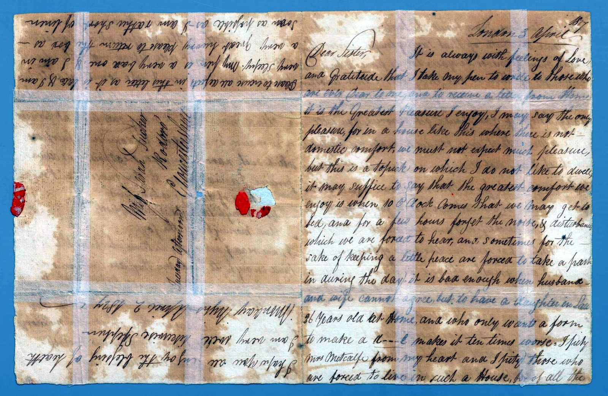
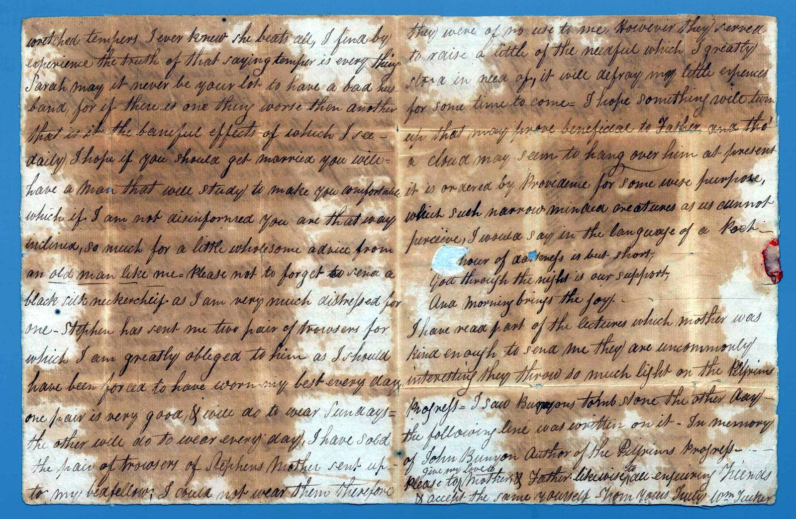

One of the earliest letters, written while Sarah was still unmarried — still Miss Tucker, at Ebley. Her brother William, lodging in a miserable London household, writes home with wry despair and a little wholesome advice.
He sells a pair of trousers to raise “the needful,” quotes a verse of comfort, and stands at Bunyan's tomb.
Sarah, may it never be your lot to have a bad husband, for if there is one thing worse than another, that is it.
She had not yet met Edward Bucknall.
The reading is given first as written, then in plain modern paragraphs. Dotted words are uncertain; square brackets mark readings to confirm.
London, 3 April
Dear Sister,
It is always with feelings of love and gratitude that I take my pen to write to those who are ever dear to me; and to receive a letter from home is the greatest pleasure I enjoy — I may say the only pleasure. For in a house like this, where there is no domestic comfort, we must not expect much pleasure; but this is a subject on which I do not like to dwell.
It may suffice to say that the greatest comfort we enjoy is when ten o'clock comes, that we may get to bed and for a few hours forget the noise and disturbance which we are forced to hear — and sometimes, for the sake of keeping a little peace, are forced to take part in during the day. It is bad enough when husband and wife cannot agree; but to have a daughter-in-law, twenty-six years old, at home, who only wants a form to make a devil, makes it ten times worse. I pity Mrs Metcalfe from my heart, and I pity those who are forced to live in such a house.

Sarah, may it never be your lot to have a bad husband; for if there is one thing worse than another, that is it — the baneful effects of which I see daily. I hope, if you should get married, you will have a man that will study to make you comfortable, which, if I am not misinformed, you are that way inclined. So much for a little wholesome advice from an old man like me.
Please not to forget to send a black silk neckerchief, as I am very much distressed for one. Stephen has sent me two pair of trousers, for which I am greatly obliged to him. I have sold the pair his mother sent up to my bedfellow; I could not wear them, so they were of no use to me — however, they served to raise a little of the needful, which I greatly stood in need of.
I would say, in the language of a poet:
Our hour of darkness is but short,
God through the night is our support,
And morning brings the joy.
I saw Bunyan's tombstone the other day; the following line was written on it — “In memory of John Bunyan, Author of the Pilgrim's Progress.” Please give my love to Mother and Father, and accept the same yourself.
From yours truly, Wm Tucker.
Sarah is addressed as unmarried — “if you should get married… you are that way inclined” — which places this letter before her marriage to Edward Bucknall, and so before the 1827 letter that congratulates her as newly settled. A later archival hand has pencilled “1827” in the corner; the internal evidence suggests it may be earlier still. One for the record to settle.
It is the most human of the collection: a young man trapped in a wretched lodging, selling his mother's trousers to raise a little money, quoting scripture for comfort, and standing at the grave of the author of Pilgrim's Progress — a book that runs, quietly, all through this family's letters.
Image reproduced from State Library Victoria, PAC-10009902. Reproduction is subject to the Library's permission and conditions of use.